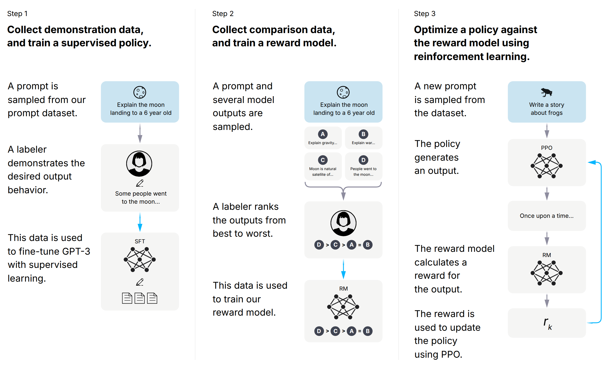

PLATE 01 · 流程图 · arXiv 经典

InstructGPTFig. 2
Training language models to follow instructions with human feedbackNeurIPS 2022
- 三栏等宽版式：左侧大号说明文字 + 右侧一列等宽卡片，栏间只用 1px 极浅竖线分隔；阅读顺序靠位置表达，不需要额外框线
- 卡片只有两色且无描边：浅蓝 = 输入 prompt、暖灰 = 处理步骤，统一大圆角；数据流箭头灰紫、「训练」箭头与反馈环亮蓝，两类箭头一眼分开
- 细节：箭头尾部从白渐变到箭头色；神经网络小图标的节点带一圈底色描边形成「断线光晕」；收拢四个输出的括号用大半径圆弧
复刻说明
- 可编辑图元
- 159 个
- 位图嵌入
- 无；标注员头像与青蛙剪影从原图描摹为 SVG，月亮 / 铅笔 / 文档为手写 SVG，其余为原生图元
- 与原图差异
- 裁掉了原图的白边；Inter 与 OpenAI 原字体接近但不完全一致，部分单词窄 1–3%；头像发丝简化为单一黑色形状